01
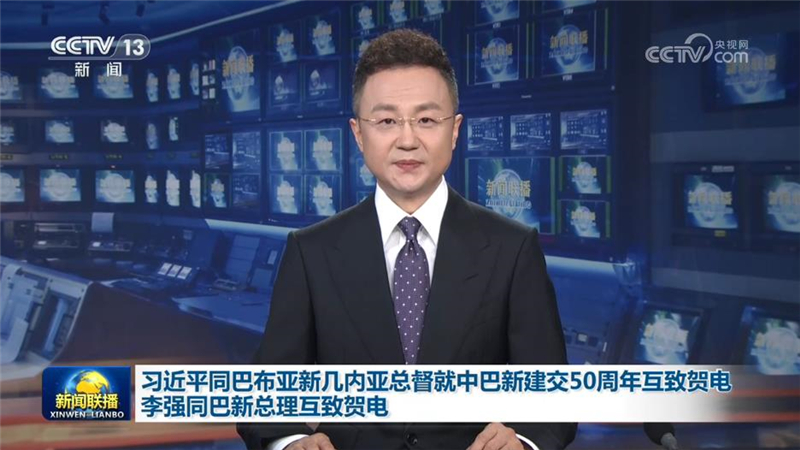
习近平同巴布亚新几内亚总督就中巴新建交50周年互致贺电 李强同巴新总理互致贺电
10月12日，国家主席习近平同巴布亚新几内亚独立国总督达达埃互致贺电，庆祝两国建交50周年。


10月12日，国家主席习近平同巴布亚新几内亚独立国总督达达埃互致贺电，庆祝两国建交50周年。
党的十八大以来，以习近平同志为核心的党中央把维护人民健康摆在更加突出的位置，从党和国家事业发展全局出发，从中华民族永续发展的高度作出“全面推进健康中国建设”的重大决策部署，引领我国卫生与健康事业发生历史性变革、取得历史性成就，为民族复兴的光荣梦想奠定健康基石。
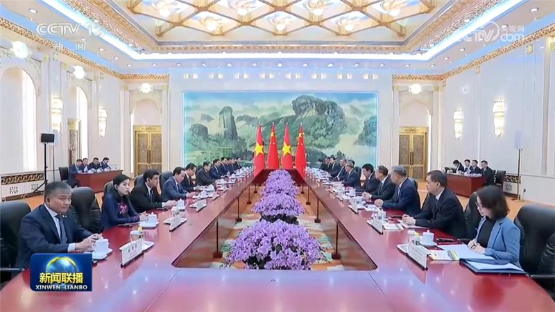
国务院总理李强12日在京会见越南国会主席陈青敏。李强表示，今年4月，习近平总书记、国家主席同苏林总书记、国家主席举行会晤，为深化两党两国关系进一步指明方向。作为“同志加兄弟”，我们愿同越方一道赓续传统友谊，增进团结互信，加强发展战略对接，深化贸易投资、互联互通、人工智能、清洁能源、人文等领域互利合作，加强多边沟通协作，更好造福两国人民。……
国务院总理李强12日应约同新西兰总理拉克森通电话。李强表示，当前，中新关系持续稳健前行，各领域合作不断取得新进展。同时，国际形势还在复杂变化，单边主义、保护主义持续冲击世界经济。中国和新西兰同为多边主义和自由贸易的支持者、践行者，应当开展更多沟通协作。明年中新将迎来建交55周年。……
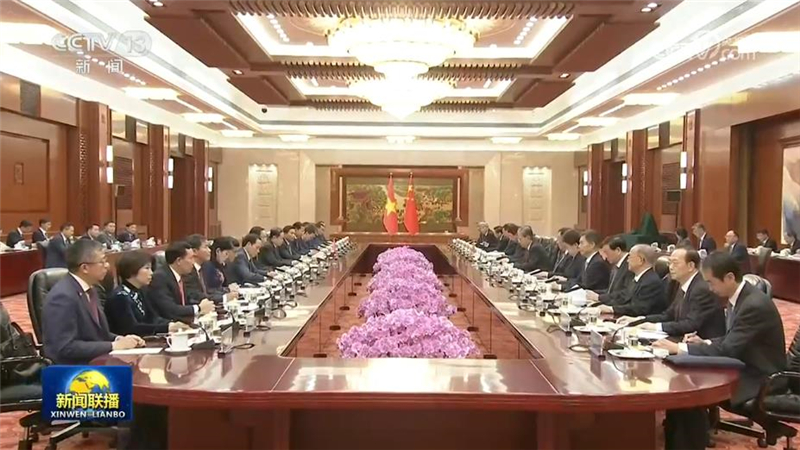
全国人大常委会委员长赵乐际12日在北京人民大会堂同越南国会主席陈青敏举行会谈，并共同主持中越立法机构联合委员会第二次会议。
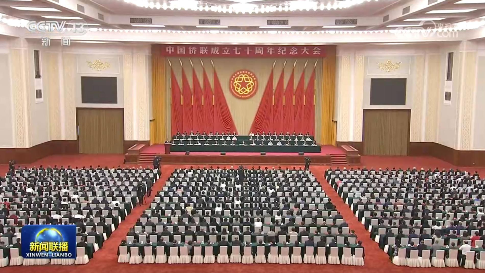
中国侨联成立70周年纪念大会10月12日在京举行。中共中央政治局常委、全国政协主席王沪宁出席并讲话，会见与会全体代表并同大家合影。
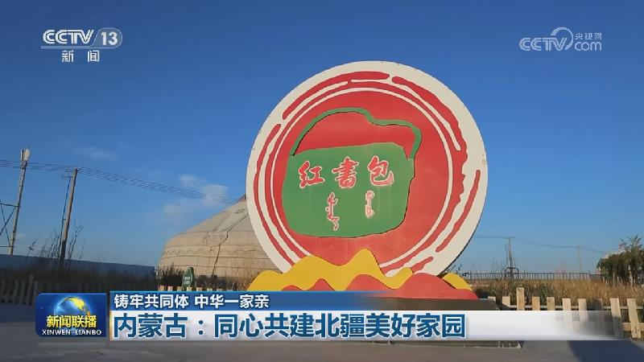
内蒙古自治区是中国共产党领导下成立的第一个省级民族自治区。内蒙古始终把铸牢中华民族共同体意识作为各项工作的主线，促进各民族交往交流交融，激励各族群众携手同心、共同建设北疆美好家园。
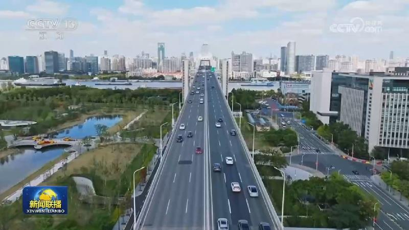
中国汽车工业协会今天（10月12日）发布最新数据显示，今年1—9月，我国新能源汽车产销量保持两位数增长，国内市场发展韧性持续显现。
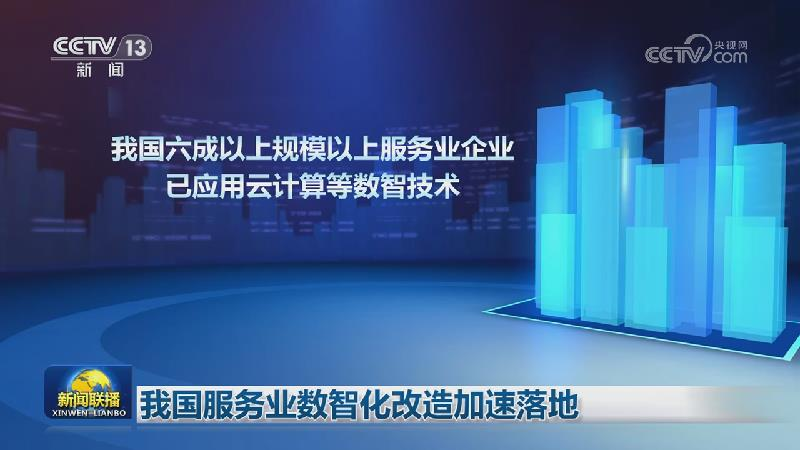
今年以来，我国加快推进服务业数智化改造升级，数智化工具广泛应用于商贸、交通、物流、生活服务等多个领域，既优化群众消费体验、提升市场运行效率，也催生出新业态、新潜力。
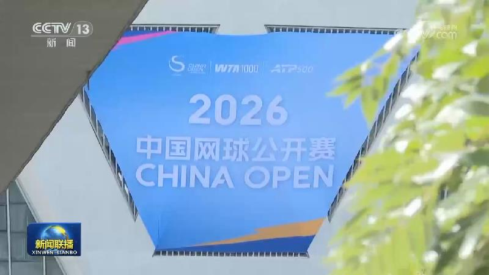
2026中国网球公开赛昨晚（10月11日）在北京落幕，在压轴上演的女单决赛中，持外卡参赛的中国选手郑钦文，以2∶0战胜赛会4号种子、俄罗斯选手米拉·安德烈耶娃。在主场近14000名球迷的注视下，郑钦文成为中网创办20年来，首位夺得单打冠军的我国本土选手。
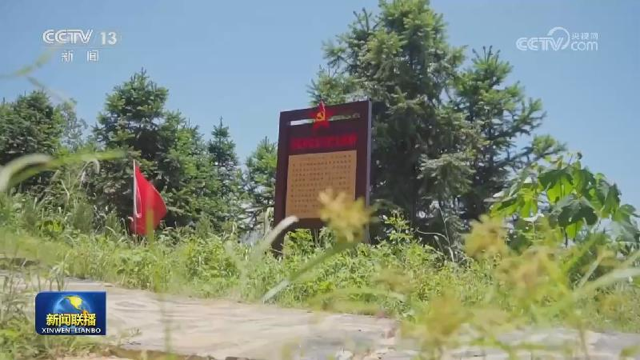
我国全面系统推进老旧水库改造提升
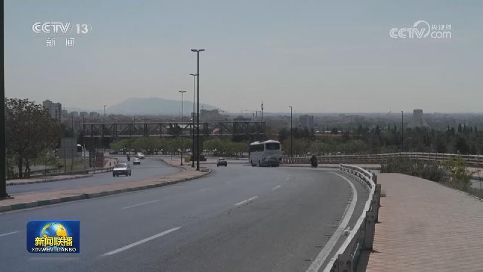
据沙特阿拉伯民航总局和沙特主导的多国联军发布的消息，位于沙特首都利雅得的哈立德国王国际机场航站楼11日再次遭到袭击，造成1人死亡、11人受伤。东部城市达曼的法赫德国王国际机场当天也再次遭袭。沙特主导的多国联军12日称，拦截并摧毁了也门胡塞武装向沙特西南部海米斯穆谢特发射的一枚弹道导弹。
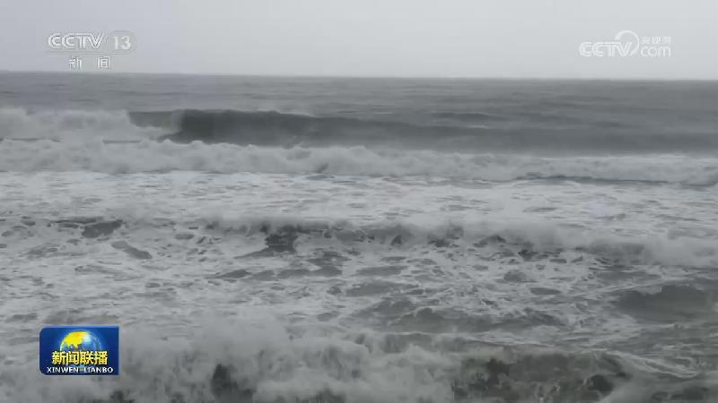
伊朗称美国已接受伊方所提部分条件